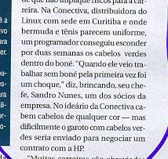

- Pessoal
- Nerd
Pessoal

Por que te chamam de verde?
Verde foi um apelido que os colegas de trabalho na Conectiva começaram a me chamar e pegou. Foi por causa da cor do meu cabelo. Usei o cabelo verde durante vários anos, de 1995 a 2002, pintado com papel crepom.
E Floripa?
Morei em Floripa durante um ano e meio, em 2002 e 2003. Depois voltei para Curitiba, a terrinha natal. A ilha é um lugar mágico, legal para passear, mas não gostei de morar lá. As coisas são devagares e complicadas, difíceis.
E a TOYOTA?
Vendi em Dezembro de 2003. Fiquei com ela exatos 4 anos. Era uma TOYOTA Bandeirante 89, azul, longa, cabine de aço, diesel, motor 608, 4x4, freio a ar, pneuzão. CARRÃO. Forte, resistente, espaçoso, bonito, simples, barulhento, trepidante, tosco.
Usava diariamente, pra ir trabalhar e para passear. Depois de duas viagens ao deserto do Atacama no Chile com os seus salares (lugares onde o carro anda sob o sal) e a maresia de quase dois anos na praia em Floripa, a lataria se desmanchou. A reforma iria sair de 6 a 8 mil reais e demoraria cerca de 90 dias. Conclusão: vendi a TOYOTA e com o dinheiro que gastaria na reforma comprei um Fiat Uno 96.
E a banda?
- A VALETA (ex-SCARECROW) acabou em 2001, estava comigo (batera), Júnior (guitarra), Eduardo (guitarra) e Gustavo (baixo). Todos "cantavam" (na verdade gritavam), era massa. Fizemos alguns shows mas não gravamos demo, sobrou apenas MP3 das músicas gravadas num ensaio. As letras eram legais, bem diferentes.
- Com o NO SNACKS eu toquei 6 meses, até meados de 2002 quando me mudei para Floripa. Gostei da banda, era um hardcore mais puxado para New Metal, podia viajar mais na bateria. Depois que voltei para Curitiba em 2004 voltamos a ensaiar esporadicamente, mas sem baixista. Depois morreu.
- Do DUMBS sobraram apenas eu (batera), o Nissin (guitarra) e o Fejão (baixo e vocal). Passamos de 2000 a 2003 hibernando com ensaios bem raros. Em 2004 voltamos a ensaiar sério e compor músicas novas, mudando o nome da banda para CORRERIA. Em meados de 2005 o ritmo esfriou novamente e agora voltamos ao estado de hibernação com ensaios raros.
Por que você demora tanto para responder e-mail?
Eu recebo MUITOS e-mails e tenho como meta responder a todos. Nenhum é deixado sem resposta. Assim sendo, é impossível ignorar a matemática: uma pessoa, vários e-mails, várias respostas. Demora.
Dentro da selva que é minha caixa de entrada, a escolha de quais mensagens responder primeiro é feita de maneira subjetiva, caótica, não cronológica, não afetiva e variante. As primeiras que respondo geralmente são as mensagens curtas, claras e que falam de apenas um assunto. Antes ainda, respondo as mensagens cujo remetente é mulher ;)
Nerd
Como ter um domínio de Internet igual ao seu?
- Você escolhe o nome do domínio e a extensão (.com, .net, .com.br, etc). Confira se é um nome vago.
- Vá no site de uma empresa que registra domínios e alugue o domínio por um ano. Isso mesmo, domínios são alugáveis e não compráveis. Eu alugo o meu na E-domínios, é nacional e custa 25 reais por ano. Recomendo.
- Fora o nome do domínio ainda é preciso configurar o DNS (que faz o seu domínio apontar para a sua página). No DNS também se configura os redirecionamentos de e-mail. O DNS vem de "brinde" com o aluguel do domínio na E-domínios.
Obs.: Caso ainda não tenha um servidor para hospedar a sua página, há vários gratuitos na Internet (com e sem banners), basta procurar. O Yahoo! Geocities é um bom começo.
Onde você hospeda o seu site?
Em vários servidores.
As páginas dos meus programas estão no SourceForge, um servidor que cede espaço e estrutura para apoiar projetos livres. O serviço é impecável e gratuito, mas é preciso que seu site se encaixe nos requisitos, o principal é ser relacionado com software livre.
O blog fica no WordPress e outros pedaços do site estão espalhados no Yahoo! Geocities e no Flickr. Todos estes serviços são gratuitos.
Você usa Windows? Você usa Linux? O que você usa?
- Em 1994 comecei usando Windows 3.11 (depois foi Windows 95 e 98)
- Em 1997 conheci o Linux (Conectiva) e fiquei usando os dois sistemas
- Em 1999 parei de usar o Windows, ficando apenas com o Linux
- Em 2002 mudei para o Mac OS 8.6 por alguns meses
- Em 2002 usei Windows 2000 com Cygwin
- Em 2003 voltei para o Linux (Yellow Dog)
- Em 2004 mudei para o Mac OS X, que é o meu sistema atual
A lista completa de quais os programas que eu uso (ou usava) em cada sistema está aqui.
Qual Linux devo usar? O que você aconselha?
Só usei dois Linux até hoje: o Conectiva Linux (brasileiro) e o Yellow Dog Linux (RedHat para PowerPC). Sou 100% ignorante nos outros.
O Linux que eu costumava aconselhar era o Conectiva, pois eu conheço as pessoas que o faziam e posso atestar a sua competência. Mas o Conectiva Linux acabou na versão 10, de 2004. Então não tenho resposta para essa pergunta.
Quero aprender Linux!
Essa é difícil de responder. "Linux" é um termo bem genérico que envolve todo o sistema operacional e seus aplicativos.
Uma boa maneira de iniciar no mundo Linux é começar a ler sites de notícias (BR-Linux, Dicas-L) e se inscrever em uma lista de discussão (linux-br) ou fórum de usuários. Uma fonte amigável de informações é a revista Linux Magazine.
Depois tente usar um Linux que rode direto do CD e não precisa de instalação (como o Kurumin), para experimentar o sistema. Outra alternativa é instalar o Cygwin caso você esteja no Windows.
Daí para frente, é contigo. Existem centenas de artigos e guias em português, livros, sites, manuais, centros de treinamento... Depende do quanto você aprender sobre o sistema. Ter por perto algum amigo que já conheça o Linux ajudará bastante a guiar os seus primeiros passos.
Quero aprender a programar!
Aprendi a programar lendo manuais e códigos de outros programas, depois tentando fazer meus próprios programinhas simples. Tem que fazer os programinhas bobos (calculadora, quiz, menu, conversor), senão não aprende.
- Não se atenha à linguagem de programação, mas procure entender bem os algoritmos, a lógica dos programas.
- Aprenda a pensar diferente, aprenda a encarar os problemas de maneira sistemática e criar soluções baseadas no seu conhecimento de algoritmos.
- Tentativa e erro é tudo.
- Enquanto não estiver seguro com a linguagem, teste o programa a cada modificação, a cada linha nova ou trecho alterado.
- Não desista.
- Use o Google.
- Estude o código de programas prontos.
- Programar é fácil, mas tem que gostar.
- O principal é ter a vontade de aprender, o resto vem com o tempo.
Se estiver em dúvida de qual linguagem escolher: Python. É intuitiva e fácil de aprender. É uma questão de horas (e não dias) para se ambientar e começar a programar em Python. É poderosa, completa e funciona no Linux, Windows e Mac (entre outros).
Quero aprender Python!
Vá na central nacional do Python: http://pythonbrasil.com.br.
Ali tem de tudo. Em português.


{kind=link}
{kind=link}